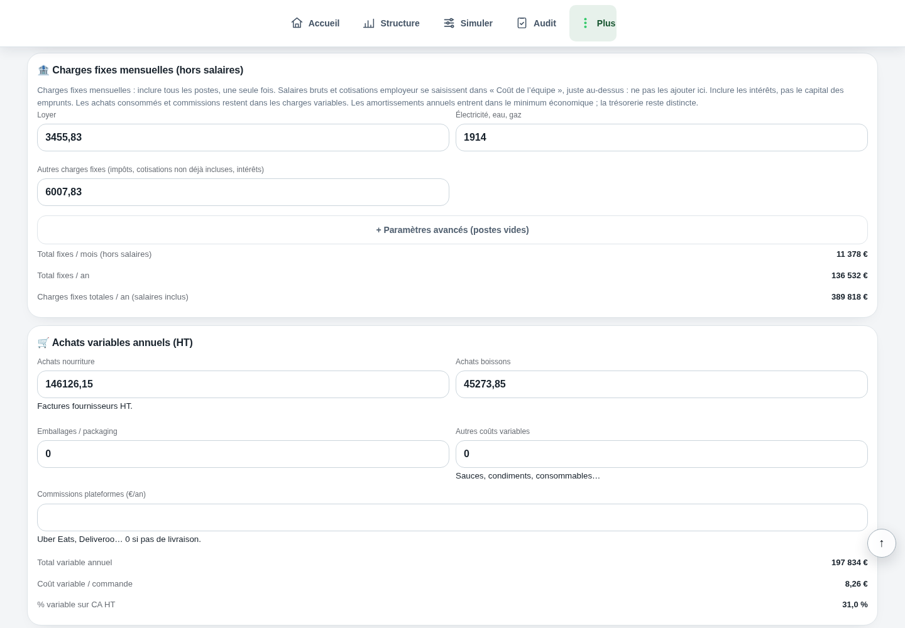

OMS · sécurité alimentaire
Principes de manipulation sûre ; ne remplace pas vos procédures et obligations locales.
Document consulté le 18 septembre 2026. Cette référence ne valide pas les données de votre établissement.Comprendre le sujet
Séparez consommation, prix unitaire et lignes fixes de facture.
Séparez consommation, prix unitaire et lignes fixes de facture. Une hausse du montant peut venir de chacun de ces éléments. Comparez les kWh à des jours et services semblables, puis recherchez les usages évitables. Une décision d’économie ne doit pas compromettre températures de sécurité, ventilation nécessaire ou qualité de production.
LES POINTS QUI CHANGENT LA LECTURE
Des repères à appliquer dans votre établissement. Le détail reste accessible, sans perdre le fil.
L’INSEE mesure une hausse annuelle de l’énergie de 16,7 %, après 12,6 % en juillet. L’inflation française atteint 2,4 %. Eurostat mesure 3,2 % pour la zone euro, après 2,9 %.
Ces indices de consommation ne décrivent pas votre contrat professionnel. N’appliquez pas automatiquement cette hausse à vos charges. Comparez vos dernières factures, puis saisissez votre propre hypothèse dans le calculateur.
INSEE, 15 septembre 2026 · Eurostat, 17 septembre 2026. Vérifiés le 21 septembre ; prochain IPC définitif annoncé le 15 octobre 2026.
Relevez la période exacte, les kWh, leur prix et les frais fixes. Vérifiez si la relève est réelle ou estimée. Le produit kWh × prix n’est qu’une partie de la facture lorsque abonnement, taxes ou autres lignes sont absents du tarif saisi.
Une variation de prix et une variation de quantité doivent être distinguées. À consommation constante, vous isolez l’effet du tarif ; à tarif constant, vous voyez l’effet des usages.
Relevez les heures d’allumage et les usages hors production. Contrôlez entretien, fermetures et équipements laissés en attente. Confirmez avec les personnes compétentes ce qui peut être arrêté et à quel moment.
Comparez avant et après sur un périmètre stable. La météo, un changement d’ouverture ou une panne peuvent modifier la consommation sans rapport avec le réglage testé.
LE LABORATOIRE
Modifiez les données, observez le résultat, puis vérifiez ce que le calcul permet de conclure.
UN SCÉNARIO, JUSQU’AU BOUT
Le calcul, jusqu’au bout
Ces montants excluent toute ligne non contenue dans le tarif saisi. Une différence de facture complète peut donc être différente.
Exemple fictif · hypothèses modifiables
| Consommation facturée à ce tarif | 924 € |
|---|---|
| Même volume à 0,25 € | 1 050 € |
| Effet de prix seul | 126 € |
Les montants sont arrondis pour la lecture.
Les calculs gardent leur précision.
Ce guide ne prescrit pas d’arrêt. Les conditions de conservation et les consignes adaptées à votre équipement priment sur un calcul de coût.
C’est une lecture complémentaire. Une partie de l’énergie dépend des locaux et du temps d’ouverture, même sans client.
Principes de manipulation sûre ; ne remplace pas vos procédures et obligations locales.
Document consulté le 18 septembre 2026. Cette référence ne valide pas les données de votre établissement.Relevez séparément kWh, tarif et frais fixes sur deux factures comparables.
DANS L’APPLICATION VERDICT

Charges fixes dans la démonstration fictive Brasserie Collet : loyer, énergie et autres charges, séparés des salaires et des achats variables.
Voir l’écran en grandCharges fixes mensuelles (hors salaires)
Électricité, eau, gaz : 1914
Total fixes / mois (hors salaires) : 11 378 €
LES CHIFFRES NE VIVENT PAS SÉPARÉMENT.
Ventes, carte, inventaire : découvrez la lecture proposée par Verdict, avec vos données et vos hypothèses.